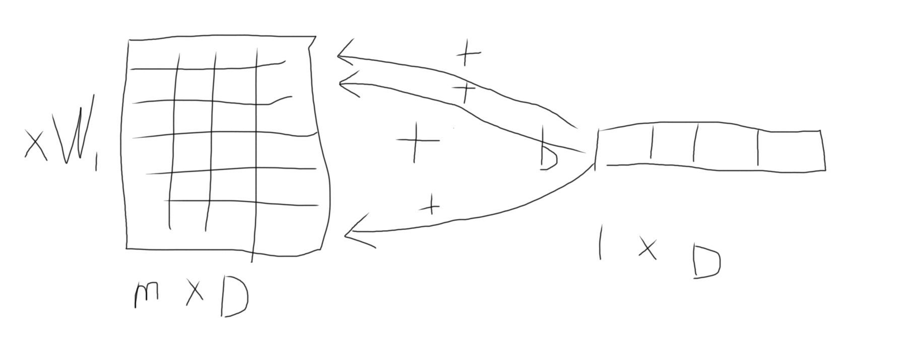

1.softmax
(a)
$$
softmax(x + c) = \frac{e^{x_i+c}}{\sum_j e^{x_i+c}} = \frac{e^{x_i}e^c}{e^c\sum e^{x_i}} = softmax(x)
$$
这个技巧在代码编写非常常用，我们一般会令$c = -max\ x$来避免整数溢出
(b)
编码时注意整数溢出.1
2
3
4
5
6
7
8
9
10
11
12
13
14
15
16
17
18
19def softmax(x):
orig_shape = x.shape
if len(x.shape) > 1:
# Matrix
### YOUR CODE HERE
x_max = np.max(x, axis=1).reshape((orig_shape[0], 1))
x = np.exp(x - x_max) / np.sum(np.exp(x - x_max), axis=1)
### END YOUR CODE
else:
# Vector
### YOUR CODE HERE
x_max = np.max(x)
x = np.exp(x - x_max) / np.sum(np.exp(x - x_max))
### END YOUR CODE
assert x.shape == orig_shape
return x
2.Neural Network Basic
(a)
notation:
$$
\delta(x) = \frac{1}{1 + e^{-x}}\\
$$
sigmoid求导：
$$
\delta’(x) = \delta(x)(1 - \delta(x))
$$
在这里插一句话：softmax的偏导形式与sigmoid是一样的
(b)
notation:
$$
CE(y, \hat{y}) = -\sum_iy_ilog(\hat{y_i})\\
\hat{y_i} = softmax(\theta_i) =
\frac{e^{\theta_i}}{\sum_j e^{\theta_j}}
$$
softmax求导：
有一些细节要注意，由于分母是所有单元相加，所以当对i$\neq$ j求偏导（理论上我们要对所有相关和不相关的变量求导数）时，我们的导数并不等于0，所以就会出现两种结果：
$$
\frac{\partial \hat{y_j}}{\partial \theta_i} = \begin{cases} \hat{y_i}(1 - \hat{y_i}), & \text{if i = j} \\
-\hat{y_i}\hat{y_j}, & \text{if i $\neq $ j } \end{cases}
$$
交叉熵求导：
$$
\begin{align}
\frac{\partial CE(y, \hat{y})}{\partial \theta_i}
&= -\sum_j y_j\frac{1}{\hat{y_j}} \frac{\partial \hat{y_j}}{\partial \theta_i} \\
&= -y_i\frac{1}{\hat{y_i}}\frac{\partial \hat{y_i}}{\partial \theta_i}-\sum_{j\neq i}y_j\frac{1}{\hat{y_j}}\frac{\partial \hat{y_j}}{\partial \theta_i} \\
& = y_i\hat{y_i} - y_i + \sum_{j\neq i} y_j\hat{y_i} \quad \text{代入$\frac{\partial \hat{y_i}}{\partial \theta_i}$} \\
& = -y_i + \sum_j y_j\hat{y_i} \quad \text{合并}\\
& = (\hat{y_i}\sum_j y_j) - y_i \quad \text{y是one-hot向量，so$\sum_j y_j = 1$}\\
&= \hat{y_i} - y_i
\end{align}
$$
写成向量的形式：
$$
\frac{\partial J}{\partial \theta}
= \hat{y} - y
$$
(c)
notation:
$$
J = CE(y, \hat{y})\\
\hat{y} = softmax(\theta_2)\\
h = sigmoid(\theta_1)\\
\theta_2 = hW_2 + b_2 \\
\theta_1 = xW_1 + b_1 \\
$$
在这里特别说明一下b2的求导，请看下图：

由于b是由numpy矩阵的broadcas来与矩阵相加的，所以我们对b求梯度后，我们要把梯度汇聚成（1 x D）的形状，我们要把梯度加起来，式子如下：
$$
\frac{\partial J}{\partial b} = \sum_m \delta I
$$
result:\
$$
\begin{align}
\frac{\partial J}{\partial x}
=& \frac{\partial J}{\partial \theta_1} \frac{\partial \theta_1}{\partial h} \frac{\partial h}{\partial \theta_2} \frac{\partial \theta_2}{\partial x}\\
=& (\hat{y} - y)W_2^T\circ (h \circ (1 - h))W_1^T
\end{align}
$$
(d)
$$
memory(W_1 + b_1 + W_2 + b_2) = (D_x + 1)H + (H+ 1)D_y
$$
(e)
1 | def sigmoid(x): |
(f)
1 | x_ = x.copy() |
(g)
1 | theta1 = X.dot(W1) + b1 # (M, H) |
3.word2vec
(a)
由于题目描述得有点抽象，我们需要使用前向和反向传播来思考这个过程：
notation:
$$
y \in R^{V\times 1}\\
\hat{y} \in R^{V\times 1}\\
v_c \in R^{D\times 1}\\
U \in R^{D\times V}
$$
forward:
$$
\begin{align}
CE(y, \hat{y})
=& -\sum_i^V ylog(P)\\
=& -\sum_i^V ylog(softmax(a))\\
=& -\sum_i^V ylog(softmax(U^Tv_c))
\end{align}
$$
backward:
$$
\begin{align}
\frac{\partial CE(y, \hat{y})}{\partial v_c}
=& \frac{\partial a}{\partial v_c}(\hat{y} - y)\quad \text{代入2.b交叉熵求导}\\
=& U(\hat{y} - y)
\end{align}
$$
(b)
思路跟上面差不多：
$$
\frac{\partial CE(y,\hat{y})}{\partial U}
= v_c(\hat{y} - y)^T
$$
(c)
$$
\frac{\partial J}{\partial v_c}
=(\delta(u_o^Tv_c) - 1)u_o - \sum_{k=1}^K(\delta(-u_k^Tv_c) - 1)u_k
$$
$$
\frac{\partial J}{\partial u_o}
= (\delta(u_o^Tv_c) - 1)v_c
$$
$$
\frac{\partial J}{\partial u_k}
= -(\delta(u_k^Tv_c) - 1)v_c \quad k = 1…K
$$
$$
\frac{O(skip-gram) } {O(negative sampling)}
= \frac{VD}{(K+1)D} = \frac{V}{K+1}
$$
(d)
题目有点长，我在重新说明一下：我们的邻近词不再只有$u_o$，而是一个窗口[$w_{t-m},…,w_t,…,w_{t+m}$]，求$v_c$和$U$对$cost$的梯度。
根据上面几个题目，我们已经知道下面几个式子的结果：
$$
\frac{\partial F(w_{t+j},v_c)}{\partial v_c} \\
\frac{\partial F(w_{t_j}, v_c)}{\partial U}
$$
下面的计算直接用上面的式子得出结果：
$$
\frac{\partial J_{skip-gram}(w_{t-m…t+m})}{\partial v_c} = \sum_{-m\leq j \leq m,j\neq0} \frac{\partial F(w_{t+j}, v_c)}{\partial v_c}
$$
$$
\frac{\partial J_{skip-gram}(w_{t-m…t+m})}{\partial U} = \sum_{-m\leq j \leq m,j\neq0} \frac{\partial F(w_{t+j}, v_c)}{\partial U}
$$
$$
\frac{\partial J_{CBOW}(w_{c-m…c+m})}{\partial U} = \frac{\partial F(w_t, \hat{v})}{\partial U}
$$
$$
\frac{\partial J_{CBOW}(w_{c-m…c+m})}{\partial U} = \frac{\partial F(w_t, \hat{v})}{\partial v_{w_t + j}} \quad j\in{-m…-1,1…m}
$$
(e)
对矩阵进行normalize，注意这里的normalization不同表格结构化数据的normalization。因为我们词向量的初始化是
根据一个分布（正太或标准正太）来初始化的，所以一个词向量上的每个feature都有相同的单位(unit)，我们不需要再进行standardlization。
我们使用范数来规范化我们的数据，因为后面我们使用$u^Tv$来度量两个向量的相似性，而不是$cos(\theta) = \frac{u^Tv}{|u||v|}$，去掉分母能够减少我们的计算量，尽可能保持分母为1就要确保我们向量的初始化为1，所以在初始化时我们会除以向量的范数，下面给出相关公式：
notation:
$$
\text{V is the length of vocaburary}\\
\text{D is the number of features of each word vector}\\
\text{N is the number of samples}\\
\text{M is the number of dimentions}\\
$$
$$
U \in R^{V \times D}\\
data \in R^{N \times M}\\
$$
$$
norm_2(U) = \frac{U_{ij}}{\sqrt{(\sum_{j=1}^D U_{ij}^2}}
\quad i = 1…V\\
$$
$$
stdardlize(data) = \frac{data_{ij} - \mu_j}{\sigma_j}
\quad i= 1…N
\quad j = 1…M\\
\mu_j = \frac{\sum_{i=1}^N data_{ij}}{N}
\quad j = 1…M
$$
$$
\sigma_j =\sqrt{ \frac{\sum_{i=1}^{N} data_{ij} - \mu_j}{N}}
\quad j=1…M
$$
代码编写：1
2
3
4
5#norm U
U /= np.sqrt(np.sum(np.square(U), axis=1, keepdims=True))
# standardlize data
from sklearn import preprocessing
data_scaled = preprocessing.scale(data)